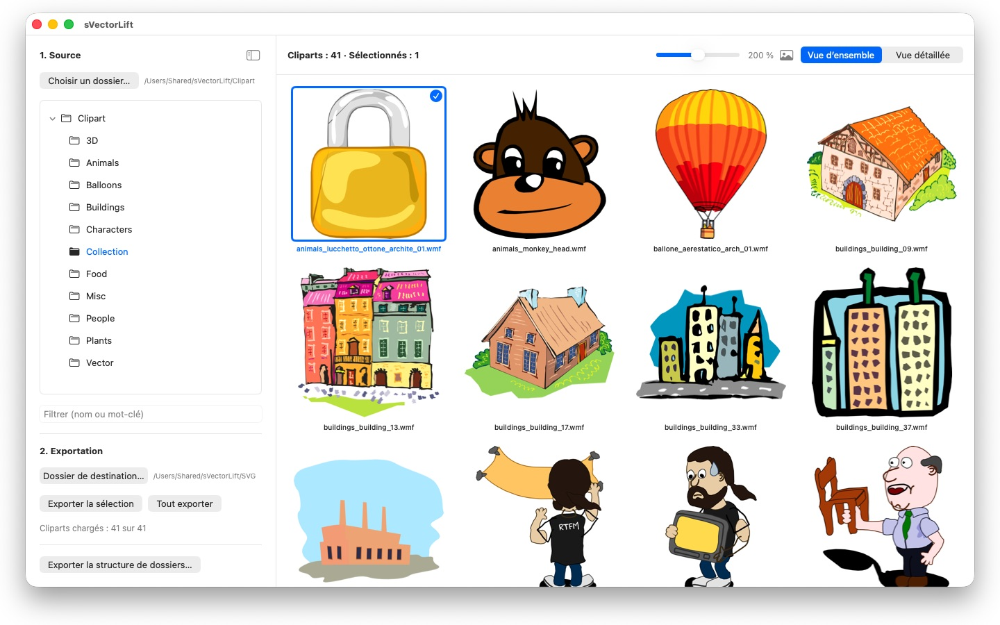
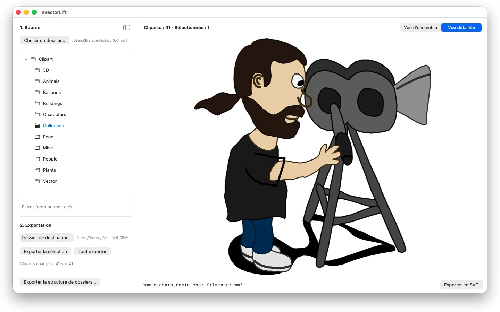

Des milliers de cliparts sur ces vieux CD CorelDRAW, prisonniers de formats morts. sVectorLift les transforme en images vectorielles vraiment utilisables aujourd'hui.


Quelque part sur une étagère dort un CD de cliparts que vous avez payé il y a des années. Les fichiers sont toujours là — mais plus rien sur votre Mac ne veut les ouvrir.
sVectorLift redonne vie à ces dessins. Il reconstruit chaque illustration en véritable SVG : net à toutes les tailles, modifiable, prêt à être glissé dans Illustrator, Affinity, Inkscape, Sketch, Figma — ou sur votre site web. Pas seulement de nouveau visibles. De nouveau utilisables. C'est tout le sens du « Lift » : de vieux dessins vectoriels, hissés au niveau des outils d'aujourd'hui.
CE QU'IL OUVRE
- Documents CorelDRAW (.cdr), versions 6 à 9
- Corel Binary Meta File (.cmx) — y compris l'ancienne variante CDRX que les autres outils refusent de lire
- Windows Metafile (.wmf)
- Computer Graphics Metafile (.cgm)
- QuickDraw 3D Metafiles (.3dm, .3dmf), rendus sous forme d'image
- Scalable Vector Graphics (.svg), affichés directement
Beaucoup de fichiers portant l'extension .cdr ne sont pas de vrais documents CorelDRAW, mais du CMX — c'est précisément pour cela que les convertisseurs habituels échouent. sVectorLift lit les deux.
sVectorLift est conçu pour les bibliothèques de cliparts : dessins, symboles, illustrations. Ce n'est pas un outil de mise en page et il ne cherche pas à reproduire des brochures multipages ou des maquettes d'impression.
UNE VRAIE CONVERSION VECTORIELLE
Ici, pas de capture d'écran d'une vignette d'aperçu. sVectorLift analyse le dessin lui-même : tracés et courbes de Bézier, couleurs de remplissage, dégradés, contours et pointillés, motifs et textures, photos incorporées, objets texte. Ce qui en sort, ce sont de véritables données vectorielles, que vous pouvez agrandir, recolorer et retoucher — et non l'image d'un dessin.
Les fichiers purement bitmap sont exportés en PNG : rien ne se perd.
PARCOUREZ VOTRE BIBLIOTHÈQUE
- Arborescence de dossiers pour toute la collection, sous-dossiers compris
- Grille de vignettes vectorielles nettes, avec curseur de taille
- Vue détaillée avec navigation au clavier dans le dossier
- Filtre par nom ou par mot-clé
- Sélection multiple comme dans Photos : clic, ⌘-clic, ⇧-clic, lasso, ⌘A
- Ouvrir un fichier directement depuis le Finder (« Ouvrir avec » ou double-clic)
- Dossiers récents qui retiennent où vous en étiez — sous-dossier et fichier sélectionné
- Export d'une sélection ou d'un dossier entier en une seule étape
- Conversion d'arborescences de dossiers entières, sous-dossiers compris, en une seule fois — la structure est conservée dans le dossier de destination
- Renommer, afficher dans le Finder, placer dans la corbeille
RAPIDE ET ÉCONOME
Les vignettes ne sont calculées que pour ce que vous regardez vraiment, en arrière-plan, puis mises en cache. Les grands dossiers s'ouvrent immédiatement, au lieu de se figer le temps de traiter des milliers de fichiers.
24 langues : anglais, allemand, français, italien, espagnol, portugais (Brésil et Portugal), néerlandais, suédois, norvégien, finnois, tchèque, polonais, hongrois, roumain, croate, russe, ukrainien, turc, persan, thaï, japonais, coréen et chinois (simplifié et traditionnel).
Tout reste sur votre Mac. Aucune connexion réseau, aucun compte, aucune collecte de données.
CorelDRAW est une marque de Corel Corporation. sVectorLift est un logiciel indépendant, sans lien avec Corel.
- Nécessite macOS 14 ou version ultérieure
- 24 langues
- Assistance : SwiftAppsBavaria@gmx.net
Autres apps
sCollect
Organiser musique, films, livres audio, livres numériques et autres collections dans une médiathèque.
sCollectPlay
Le lecteur de la médiathèque : lire musique, films, livres audio et podcasts simplement depuis un dossier, un fichier XML iTunes ou une médiathèque sCollect, sans rien modifier aux tags des fichiers.
sName2Date
Écrire la date du nom de fichier comme date de prise de vue dans les photos, films et enregistrements audio, pour qu'un fichier comme IMG_20240115_103000.jpg se classe correctement dans n'importe quel gestionnaire de photos.
sName2Date Lite
L'édition pour un fichier par passage : écrire la date du nom de fichier comme date de prise de vue dans une photo, un film ou un enregistrement audio, la définir à la main, mettre le nom en notation ISO et tout annuler avec ⌘Z — les mêmes fonctions que sName2Date, mais sans dossiers entiers.
SwiftRename
De la carte mémoire à l’archive : nommer photos et vidéos d’après l’heure de prise de vue, les classer par année, par mois ou par jour, repérer les doublons — RAW compris.
sCollectPlay Lite
L'édition allégée de sCollectPlay : ouvrir simplement un dossier, un fichier XML iTunes ou une médiathèque sCollect et y lire musique, films, livres audio et podcasts, avec listes de lecture, pistes audio et de sous-titres, ralenti et avance image par image. Une source par session ; le navigateur en colonnes, les listes de lecture personnelles et les sources récemment utilisées sont réservés à la version complète.
sBikeBridge
Analyser ses sorties à vélo sans les téléverser sur un portail : importer les fichiers FIT de tout compteur vélo qui enregistre dans ce format, ainsi que GPX et TCX. Les sorties sont conservées dans une bibliothèque propre sur le Mac, avec carte, puissance et fréquence cardiaque, photos et notes ; l'import détecte les doublons. Des indicateurs par année ou par mois et des filtres par distance, dénivelé et durée rendent les sorties comparables. Sur demande, la carte est aussi disponible hors ligne.